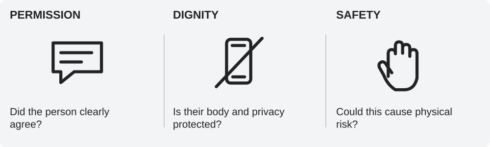

Week 8 · Tuesday Sep 22 · Welcome
“I was joking” tells us the intent. It does not tell us whether the action was okay.
Week 8 · Tuesday Sep 22 · Regulate
Privately notice: calm, uncomfortable, unsure, distracted.
You do not have to laugh because other people are laughing.
Week 8 · Tuesday Sep 22 · Orient
PERMISSION: Did the person clearly agree?
DIGNITY: Does this protect their privacy and humanity?
SAFETY: Could this make their body or environment unsafe?
Week 8 · Tuesday Sep 22 · Connect · Look

A: High-five after a good play.
B: Hide a pencil pouch for ten seconds; friend wants it back.
C: Pull another student’s clothing to expose them.
Use Permission · Dignity · Safety—not the word “prank”—to classify each.
Week 8 · Tuesday Sep 22 · Connect · Share
Why doesn't “I was only joking” answer the three questions?
Week 8 · Tuesday Sep 22 · Practice
Jordan pulls Marcus's sweatpants down in a hallway while students laugh. Marcus pulls them back up and leaves.
1. Permission? 2. Dignity? 3. Safety?
Then: What should happen immediately?
The detail ____ shows a concern about ____.
Week 8 · Tuesday Sep 22 · Commit
Before I call something “just a joke,” I will ____.
Week 8 · Tuesday Sep 22 · Transition
BEFORE WE MOVE ON: What three questions tell us whether a prank crossed the line?
Permission · Dignity · Safety